수행 범위
- 환경 설치·초기 GUI 확인
- 4,096개 환경 평지 학습
- 체크포인트 평가·보행 진단
이 자료는 튜토리얼 재현과 후속 개선 실험을 구분합니다. 보행 품질 해결 여부는 마지막 실험 결과에 따릅니다.
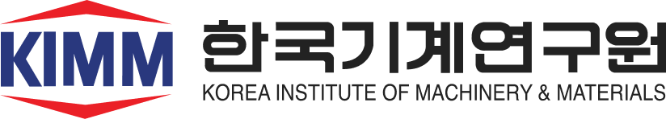
원문과 동일하게 수행한 항목과 이후 추가한 진단/수정은 각 장에서 구분합니다.
세부 조건·근거: 기준: huggingface.co/blog/nvidia/microduck-isaac-lab-sim-to-real
| 항목 | 실제 사용 조건 |
|---|---|
| GPU / 메모리 | RTX 5080 16GB / 시스템 RAM 64GB |
| 소프트웨어 | Isaac Lab 3.0.0 · PyTorch 2.11 cu130 |
| 물리 / 모터 | Newton MJWarp · BAM · backlash |
| 학습 가상환경 | .venv-preview — 이름과 달리 본 학습에도 사용 |
Python 3.12.13, Newton 1.8 dev, Warp 1.17, RSL-RL 5.5.1. 기존 시스템 Isaac Lab/Isaac Sim 설치는 변경하지 않았습니다. 튜토리얼 발표 당시 버전이 아니라 글에서 안내한 main의 2026-11-03 고정 스냅샷입니다. 세부 조건·근거: 근거: logs/hardware.txt · logs/flat-headless-job.json
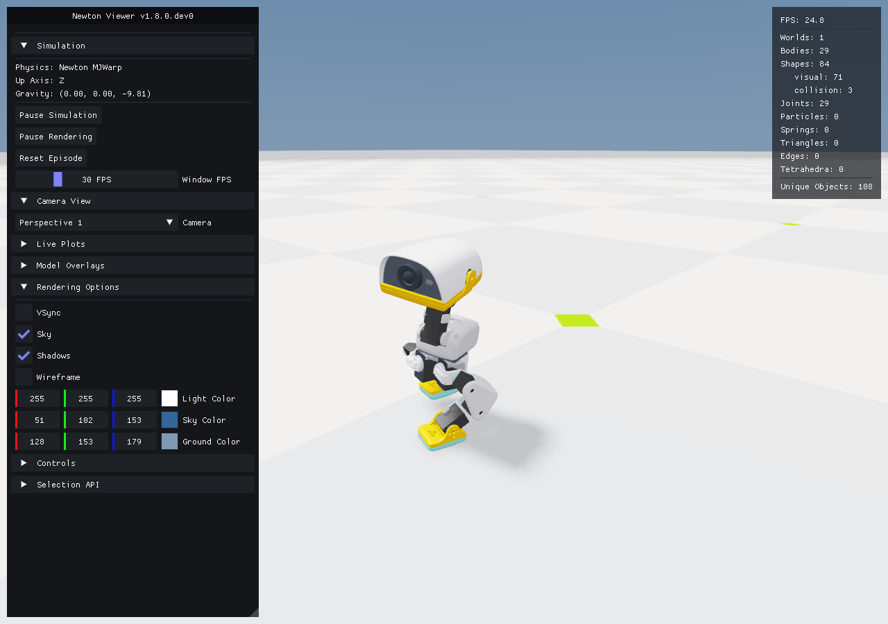
Kit 시각화도 Newton 물리를 유지할 수 있으며 화면 변경 자체가 보행 능력을 개선하지 않습니다. Kit 초기 실행은 별도 검증 대상입니다. 세부 조건·근거: 실제 Newton 화면 캡처
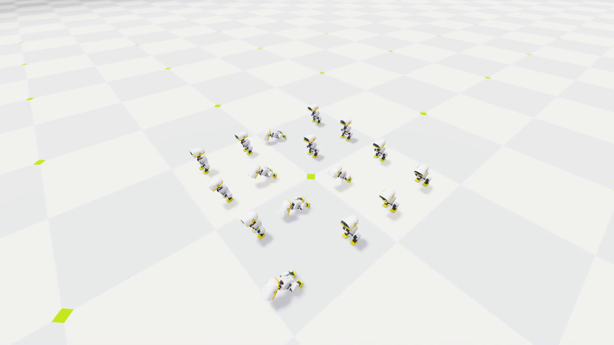
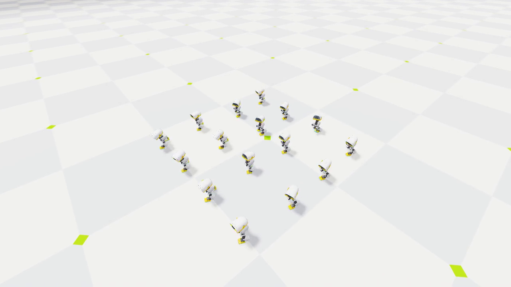
저장 정책 비교 · 각 16대 · 같은 조건에서 전진 명령
초기 영상은 4,096환경 사전 시험의 model19, 학습 후 영상은 본 학습 model45000입니다. 서로 다른 실행의 저장 정책을 동일 평가 환경에서 재생한 비교이며 당시 학습 업데이트의 실시간 녹화가 아닙니다. 둘 다 원본 baseline, 센서잡음/밀기 없는 play 모드, 머리/몸통명령0. 16환경은 시각화용이며 실제 본 학습은4,096환경입니다. 넘어짐 종료와 환경별reset을 유지합니다. 영상1초=시뮬레이션1초, 50fps. 세부 조건·근거: 체크포인트 재생 · 16환경 · seed31415 · 4초 정지→8초 전진0.15m/s · 동일 카메라
제어 관절은 왼다리5 + 목/머리4 + 오른다리5. 머리: neck_pitch/head_pitch/head_yaw/head_roll. 다리: hip_yaw/hip_roll/hip_pitch/knee/ankle. 몸통 명령6개는 입력에 남지만 별도 몸통 자세 추종 보상은 비활성. Critic은76개 입력. 세부 조건·근거: 근거: flat_env_cfg.py · rsl_rl_ppo_cfg.py
| 구분 | 구성 |
|---|---|
| 센서·이력 48개 | IMU6 + 관절각14 + 관절속도14 + 직전행동14 |
| 명령 13개 | 이동·회전3 + 머리4 + 몸통6 |
| 양쪽 다리 각5개 | hip_yaw · hip_roll · hip_pitch · knee · ankle |
| 목·머리4개 | neck_pitch · head_pitch · head_yaw · head_roll |
IMU6은 각속도xyz(rad/s)와 몸체 좌표계 중력 방향xyz. 관절각은 기준자세 대비 상대각(rad), 속도rad/s, 행동은 기준자세 대비 목표변화(rad, scale1). backlash 조건에서 encoder가 서보+유격각을 관측합니다. 실제 자산의 추가 구동부 전체 개수와 정책이 제어하는14개를 구별합니다. 세부 조건·근거: 61 = 6+14+14+14+3+4+6 · 14개는 제어하는 서보 개수
명령은 모터로 직접 보내지 않고 정책의 입력이 됩니다. 정책이 보행과 머리 추종을 함께 만족하는 관절행동을 선택합니다. 몸통벡터는 배포 입력 호환용으로 유지되는 미사용 자세지령이며 현 구성에서 이를 따르는 능력을 학습했다고 볼 수 없습니다. body_pose는 generic6차원벡터로 샘플링하며 활성 보상 소비자가 없습니다. 세부 조건·근거: 머리 최종범위 ±1.1 / ±1.1 / ±1.4 / ±0.31rad
On-policy PPO는 수집한 배치에 여러 차례 최적화를 수행합니다. 갱신 중에는 이 실행의 시뮬레이터 경험 수집을 진행하지 않습니다. 원본 50,000회는 약49.15억 환경 전이입니다. 세부 조건·근거: 배치당 24,576개 전이 · 수집과 PPO 갱신은 순차 수행
| 핵심 계산 | 의미 |
|---|---|
| ρ = π새정책(a|s) / π수집정책(a|s) | 수집 때보다 같은 행동을 얼마나 더 선택하는가 |
| L = E[min(ρÂ, clip(ρ,0.8,1.2)Â)] | 이득 Â를 반영하되 과도한 정책 변화를 억제 |
| 배치 반복 사용: 원본5회 / 교정3회 | 수집 비용을 줄이면서 여러 번 경사 갱신 |
| 별도 필요한 제약 | 모터 목표 한계·행동 이력 범위·유한값 검사 |
위 식은 최대화하는 정책 surrogate입니다. 실제 구현은 음수 정책손실 + 가치손실 − 엔트로피 보너스를 최소화하며 E5에는 대칭 보조손실을 추가합니다. 확률비 clipping은 관절각이나 신경망 출력의 절대값을 강제로 제한하지 않습니다. 반복을 무제한 늘리면 수집 정책과 새 정책의 차이가 커질 수 있어 반복수/변화량을 함께 관리합니다. 세부 조건·근거: clip ε=0.2 · γ=0.99 · GAE λ=0.95 · entropy 계수0.01
5ms 간격으로 접촉·관절 상태 계산
20ms마다 새 목표 · decimation=4
같은 목표를 유지하는4회의 물리 스텝에서도 상태와 모터 힘은 계속 달라집니다. PPO 미니배치4개와는 무관합니다. 세부 조건·근거: 물리 dt=0.005s · 제어 dt=0.02s
목·머리 4축 추종 +2
지속되는 각도 편향 −3
전진·회전 추종 +4 / +4
목표 속도와의 오차에 보상
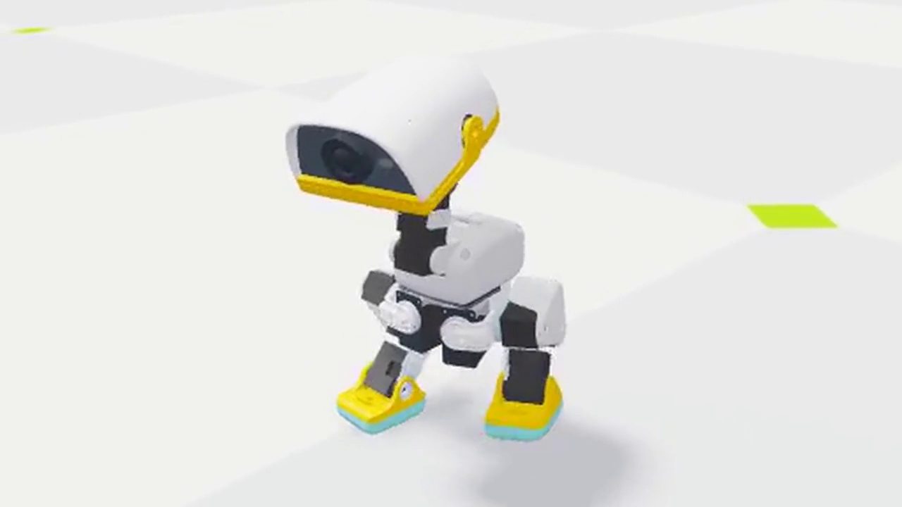
직립 +2 · 몸통 흔들림 −0.05
행동 급변·관절 한계 감점
공중시간 +3 · 미끄러짐 −0.1
발 높이·자기 충돌 감점
실제 Newton 시뮬레이션 녹화 대표 프레임 사용. 그림은 부위별 보상의 주요 예이며 전체15항목은 부록에 수록. 표시 가중치는 원본의 성숙 커리큘럼 기준. 이동/회전은 exp(-오차²/σ²)이며 σ=0.15m/s와0.35rad/s. 몸통 흔들림은 각속도 제곱합. 공중시간 보상은 특정 시간 구간에서 활성화. 머리 움직임을 무조건 억제하는 것이 아니라 주어진 머리 명령을 추종하는 과제임. 이후 E3/E6 교정 보상 및 머리 고정 비교 실험과 구분함.
| 시점 | 주요 항목 |
|---|---|
| 환경 생성 | 마찰·질량·엔코더 편차·IMU 장착·공급전압 |
| 에피소드 시작 | 초기 상태·무게중심·관절 마찰·추가 관성 |
| 도중 3~6초 | x/y 속도에 ±0.3m/s 범위 변화 추가 |
| 관측 시 | 센서 잡음·지연 |
몸통질량0.95~1.05배, 바닥마찰0.7~1.3, 전압6.5~8.2V. 최종 COM 범위 몸통각축±15mm/머리±10mm. 관절 초기각 offset은0. startup과reset을 혼동하지 않습니다. 세부 조건·근거: 원본 학습에는 랜덤화 적용 · play 평가는 잡음·밀기 해제
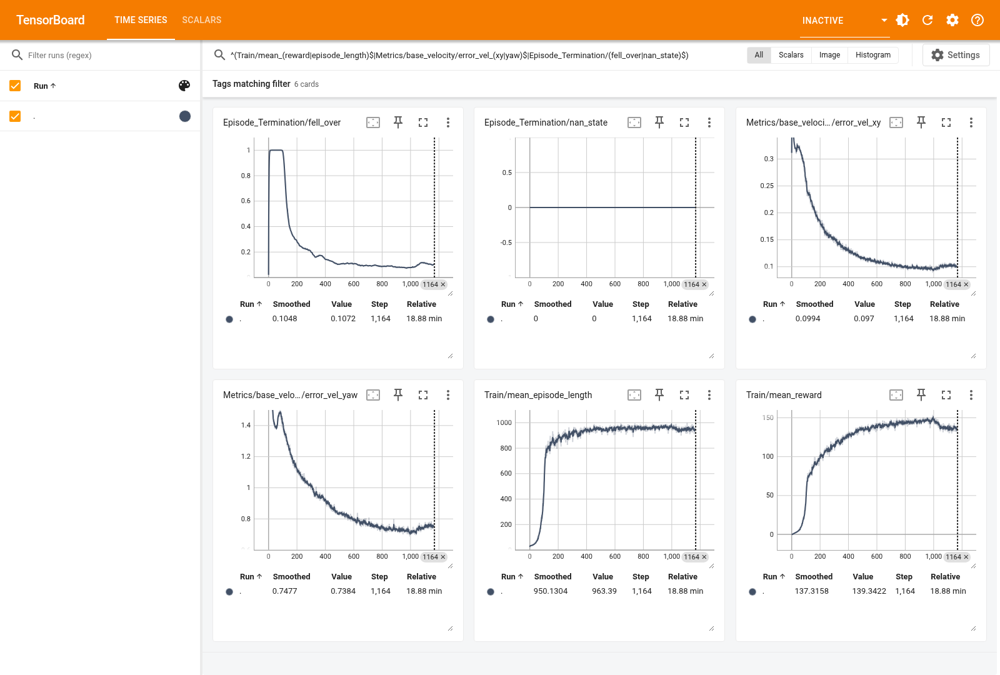
초기 캡처를 최종 성능처럼 제시하지 않습니다. 정책의 실제 행동은 영상과 관절 자료로 별도 확인합니다. 세부 조건·근거: 초기 약1,164회 당시 원본 TensorBoard 캡처 — 최종 그래프 아님
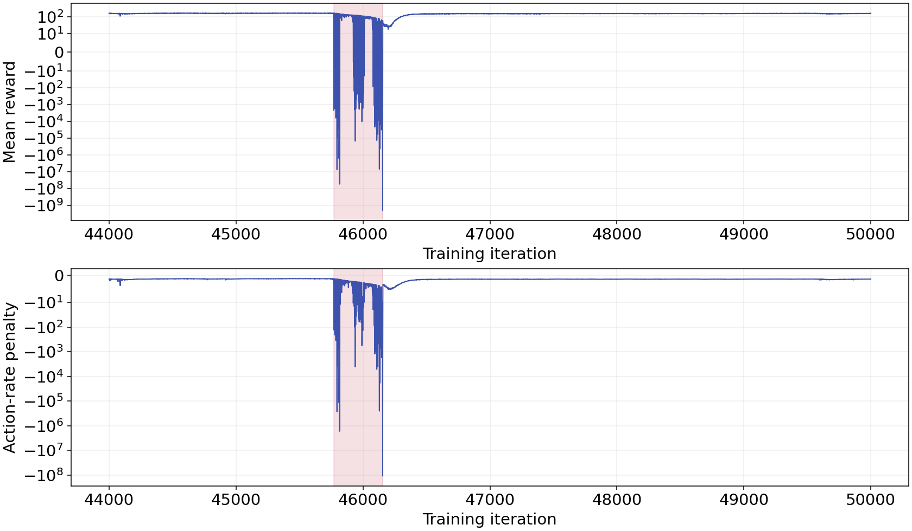
최대 action-rate 감점 -109,471,520; 평균 reward -2,101,853,056; value loss3.15e18. 모두 유한값이어서NaN검사만으로 탐지되지 않았습니다. 외부 목표명령 급증으로 확정할 증거는 없습니다. 세부 조건·근거: 원본 event scalar · y축 symlog · 전체 원자료 보존
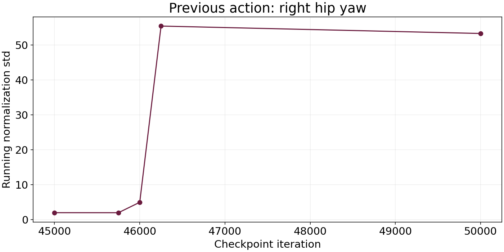
45k와최종 모델의 독립 평가에서도 일부 추종 지표가 악화됐습니다. 정규화 통계 변화는 확인 사실이지만 전체 성능 저하의 단일 원인으로 확정하지 않습니다. 세부 조건·근거: 체크포인트 state_dict 직접 비교
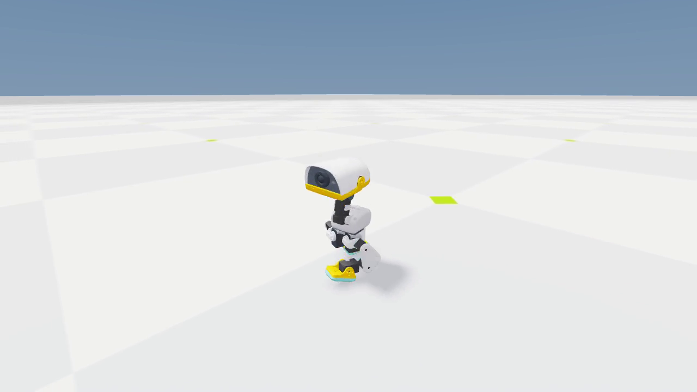
잡음과밀기 없는play모드, 머리/몸통명령0, 초기위치/yaw고정. 36초끝의 위치복귀는timeout reset입니다. 기준모델은교정되지 않은원본입니다. 세부 조건·근거: Newton 렌더러 직접 녹화 · 36초 · 50fps · 실제 추론
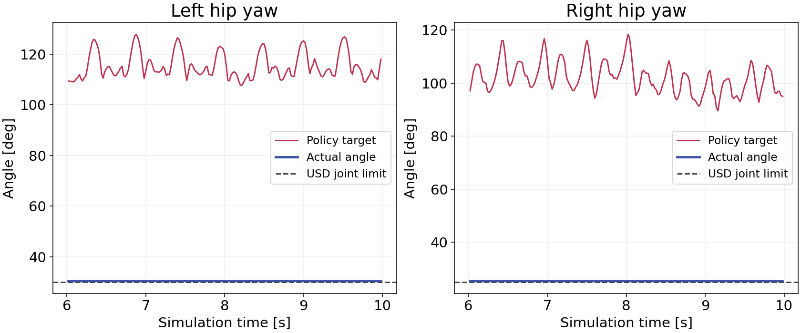
실제각약30.37°/25.39°는solver에의한약0.4°초과포함. 전류제한 kt×Imax≈0.64052Nm에해당하는구동토크가계속발생. 물리고장으로단정하지않습니다. 세부 조건·근거: 45k · 단일 데모 전진6~14초 · 그래프는6~10초
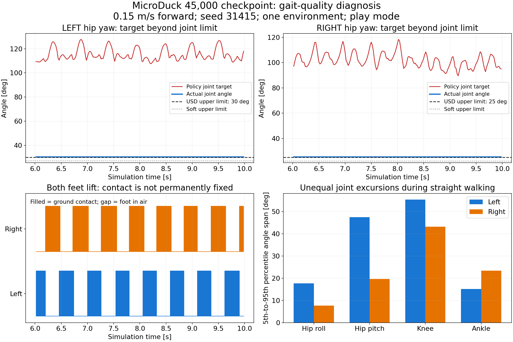
발들기보상만강화하는것이우선해법은아닙니다. 사진에서보이는좌우와로봇자체좌우를구분하고이름기준으로분석했습니다. 세부 조건·근거: 32환경 · 0.15m/s · 초기2초 제외 · seed31415
| 기존 기준 | 추가 기준 |
|---|---|
| 생존율 ≥90% | 목표 각도의 soft-limit 초과0% |
| XY RMSE ≤0.15m/s | hip_yaw 전류포화 시간 비율 <1% |
| yaw RMSE ≤0.35rad/s | 직진 hip_pitch 좌우 가동범위 비 ≤1.5 |
| 정지·전진·회전 | 여러 seed + 영상으로 절뚝거림 확인 |
세부 조건·근거: 잠정 공학적 기준 · 실물 인증/보편적인 최적 보행 기준 아님
오차상한0.15m/s만 쓰면 0.15m/s 명령에서 정지정책이 경계상 통과할 수 있습니다. 가동범위비만 쓰면 양쪽 다 거의 고정돼도 비율은1이 될 수 있어 최소가동범위를 함께 검사합니다. 세부 조건·근거: 기존 기준을 완화하지 않고 허점을 보완 · p05~p95 범위
| 실험 | 변경 | 판단 |
|---|---|---|
| E0 | 원본 정책·영상·진단 보존 | 기준선 |
| E1 | 모터 목표를soft-limit안으로 제한 | 토크 감소·비대칭 잔존 |
| E2 | 목표 범위에0.05rad 여유 추가 | 한계 초과 제거·비대칭 잔존 |
| E3 | 범위 제한+자세 보상으로 교정 학습 | 출력 guard에 의해 중단 |
| E3b | 환경 전달·이력 행동 ±3 제한 | 별도 교정 학습·재평가 |
세부 조건·근거: 후속: 필요시 좌우 대칭 증강 또는 초기화 학습
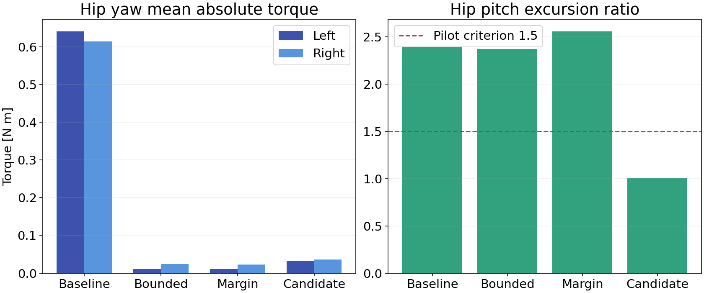
세부 조건·근거: 원본/E1/E2: 같은32환경·명령·seed · 결과JSON보존
| 항목 | 설정 |
|---|---|
| 초기 상태 | model45000의정책·가치·정규화·optimizer복원 |
| 학습량 | 1,024환경 × 24step × 추가500회 |
| 최적화 | fixed LR 1e-4 · 4미니배치 · 3epochs |
| 보상 추가 | 목표 초과량 -0.5 · hip_yaw 중심편차 -0.5 |
| 환경 | 성숙 curriculum고정 · 원본DR/잡음/밀기유지 |
세부 조건·근거: 실험 가중치이며 최적값 아님 · 원본 체크포인트 변경 없음
최초46k사건과동일한근본원인이라고단정하지않습니다. 이번E3에서원시행동피드백의크기증가는직접기록했습니다. ±3은관절별물리상한을대신하지않습니다. 세부 조건·근거: guard-actions.pt 보존 · NaN이 아닌 큰 유한값 · 중단기준완화없음
| 단계 | 교정 후 계산 |
|---|---|
| 환경 전달 행동 | a = clip(정책 출력, −3, +3) |
| 요청 목표 [rad] | q요청 = q기준 + a − 엔코더 편차 |
| 최종 모터 목표 [rad] | q목표 = clip(q요청, soft하한+0.05, soft상한−0.05) |
| 실행 검증 | 3환경×14관절 · 극단 입력 ±50 · 계산 오차0 |
last_action과 행동변화 보상은 환경 전달 행동을 사용합니다. 신경망의 제한 전 출력 자체는 여전히 커질 수 있으므로 abs>50 감시를 유지합니다. 목표의 범위제한이 실제 관절각의 순간 추종오차까지 0으로 만드는 것은 아닙니다. 0.05rad 여유는 유격/추종오차를 고려한 실험값입니다. 세부 조건·근거: 행동 scale=1 · 목표 제한은 엔코더 보정 뒤 적용
단순히 매순간 양쪽 관절각을 같게 만드는 방법이 아닙니다. 두 번 반전한 관측61/76개와 행동14개가 원본과 정확히 같음을 런타임 검사합니다. 원본 샘플은 변경하지 않습니다. Mirror loss는 비활성입니다. 세부 조건·근거: 공식 PR8883의 callback만 별도 복사 · 고정 IsaacLab/의존성 유지
| 항목 | E3b → E4 결과 |
|---|---|
| 추가 학습 | 대칭 증강 1,000회 |
| 좌우 hip_pitch 범위비 | 2.08 → 1.92 · 목표 ≤1.5 |
| 회전 추종 RMSE | 0.296 → 0.346rad/s · 상한0.35 |
| 판정 | 부분 개선 · 직접 대칭 오차 학습으로 다음 실험 |
세부 조건·근거: 같은32환경 · seed31415 · 전진0.15m/s · E4 model46500
M은 좌우반전 연산. Lmirror=mean((π(Ms)−stopgrad(Mπ(s)))². 계수1.0은 실험값이며 최적값이 아닙니다. PPO의 원래 목적함수에 더하는 보조손실이며 환경 보상17개는 유지합니다. 양쪽 다리를 동시에 같은 각도로 고정하는 것이 아니라 좌우 반전된 상황에 맞는 대응을 학습합니다. 세부 조건·근거: RSL-RL 내장 mirror loss · E4 model46500에서 추가1,000회
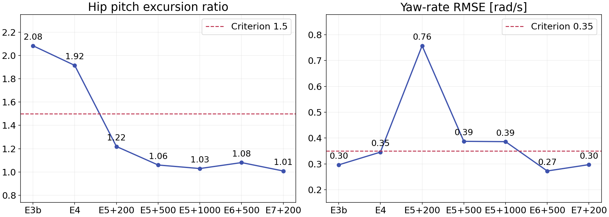
E5+200에서는 좌우 범위비가1.22로 좋아져도 생존62.5%, yawRMSE0.757로 실패했습니다. E5+500은 생존100%로 회복하고 범위비1.06이나 yawRMSE0.387로 기준을 넘었습니다. 이후 기록은 최종 평가파일 존재 시 자동 반영합니다. 세부 조건·근거: 동일32환경 · seed31415 · 전진0.15m/s · 낮을수록 좋음
| 3개 seed × 32환경 | E5 최종 후보 |
|---|---|
| 정지·직진·회전 생존율 | 각 조건100% · 20초 평가 |
| 직진 hip_pitch 범위비 | 1.021~1.030 · 기준≤1.5 |
| 직진 yaw RMSE | 0.372~0.386rad/s · 기준0.35 초과 |
| 제자리 회전 평균속도 | 0.319~0.361rad/s · 목표0.5 / 기준≥0.4 |
세부 조건·근거: E5 model47500 · 잡음/밀기 없는 play 평가 · 실물/험지 미검증
| 항목 | E6 변경 |
|---|---|
| 기존 회전 보상 | 4 exp(−e²/0.35²) · 큰 오차에서0에 수렴 |
| 추가 감점 | −2e² · e = 실제 세계z각속도 − 목표 회전속도 |
| 직진 / 제자리 회전 | 목표0 / 0.5rad/s를 같은 오차식으로 처리 |
| 비교 조건 | E5 model47500 +500회 · 그 외 설정 유지 |
E5 직진yaw의1/99백분위는 약−0.927/+1.061rad/s로 평균0.0082만으로는 흔들림을 알 수 없습니다. 지수 보상은 오차가 클수록0에 가까워지며 제곱오차 감점은 큰 오차도 계속 구분합니다. 목표0만 억제하면 회전 능력도 약해질 수 있으므로 명령 대비 오차를 사용합니다. 세부 조건·근거: 보상18개 · 제어dt0.02를 곱해 합산 · 가중치−2는 실험값
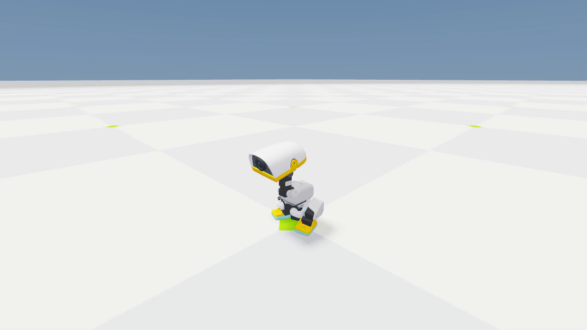
고정명령: 정지/직진/회전×3seed 모두통과. 그러나시각검증에서정지후출발실패를발견했고headless1환경데모에서재현했습니다. E6+100의정책입력명령최대오차0.0으로명령전달문제아님을확인. 이후전환구간별출발/회전/정지기준을추가하며완료판정을보류했습니다. 세부 조건·근거: E6 최종 모델 · 36초 실제 영상 · 고정 명령 평가와 명령 전환을 구분
초기상태부터전진하는것과안정적으로정지한뒤출발하는것은다른상태분포입니다. 실제시연의머리/몸통0조건을학습의절반에포함하고나머지는원본분포를유지합니다. 새보상항을추가하지않고전환경험보완효과를검증합니다. 세부 조건·근거: 명령 재추출3~8초 유지 · E7은 경험 분포 변경 실험
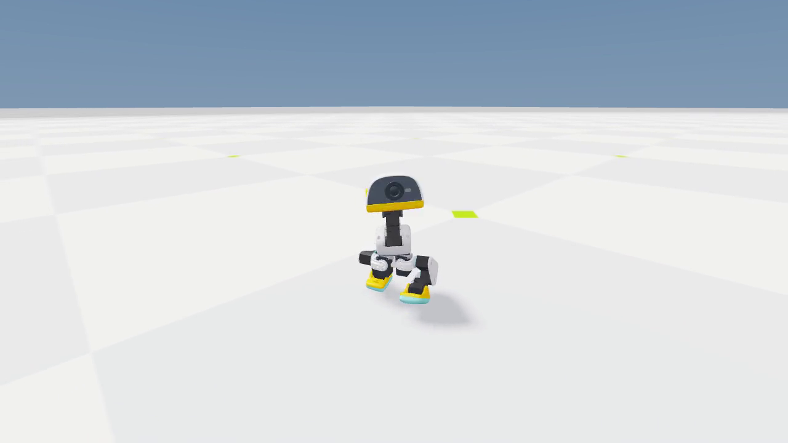
세부 조건·근거: E3b 실제 녹화 · 한계/포화 개선과 자연스러운 보행을 구분
| 실험 | 주요 변경 | 추가 학습 | 결과 |
|---|---|---|---|
| E3 → E3b | 목표 제한 + 원시 행동 제한 | 중단 → 500회 | 한계·포화 해소 |
| E4 | 좌우 대칭 경험 증강 | 1,000회 | 가동범위 비 1.92 |
| E5 | 대칭 보조손실 추가 | 1,000회 | 가동범위 비 1.03 |
| E6 | 회전 오차 제곱 감점 | 500회 | 회전 개선 · 출발 실패 |
| E7 | 정지·출발·회전 경험 보강 | 200회 모델 채택 | 고정·전환 평가 통과 |
각 실험의 설정·상태·체크포인트는 manifest.json 보존. E3는 약12회 뒤 원시행동55.7로 감시 중단. E3b는 원본45000에서 다시500회 수행. E4/E5/E6은 앞 실험 체크포인트에서 순차 복원. E7은 전체641회까지 진행했으며 중간200회 모델의 검증 완료 후 종료함. 가동범위 비는 좌우 hip_pitch의 p05~p95 범위 중 큰 값/작은 값. 실행 완료와 품질 검증 통과를 구분함.
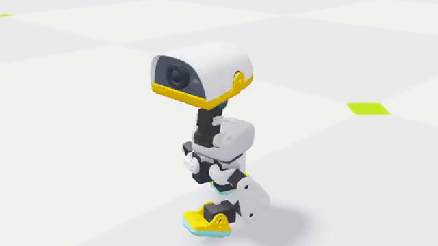
45,000회 학습
끝단 의존·절뚝거림
가동비 2.39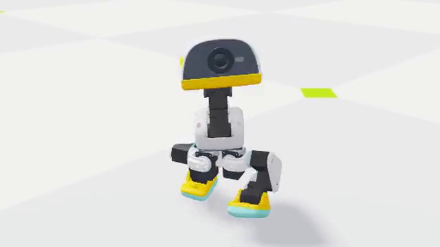
목표·행동 범위 제한
포화 해소·비대칭 잔존
가동비 2.08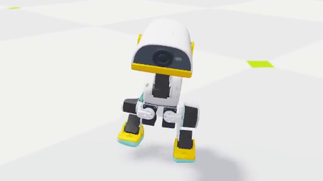
대칭 경험 + 보조손실
좌우 가동 차이 감소
가동비 ≈1.03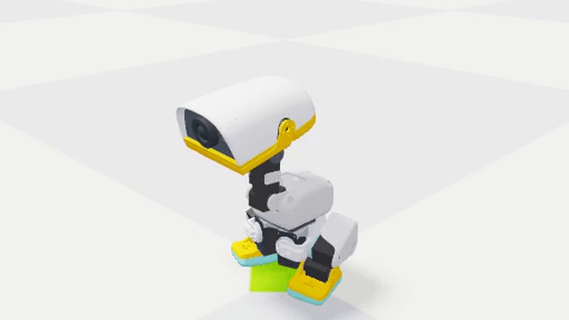
회전 오차 감점 추가
회전 개선·출발 실패
정지 뒤 멈춤정지·출발 경험 보강
출발·회전·재출발 통과
가동비 ≈1.01왼쪽부터 원본45000, E3b+500, E5+1000, E6+500, E7+200. 모든 영상은 같은36초 명령시연의6~12초 전진명령 구간을 실제속도 그대로 잘라 로봇 중심으로 확대함. E6는정지후출발실패를보여주는원본실패영상임. E1/E2/E3의진단·실패와E4중간결과는앞뒤상세슬라이드에보존. 조건: 단일환경, seed31415, 머리·몸통명령0, 전진0.15m/s. 가동비수치는별도32환경평가의p05~p95 hip_pitch범위. E5는대칭개선에도회전추종기준미달, E7에서최종검증통과. 각 영상은6초씩동시에자동반복재생; 반복연결은편집경계임.
| 항목 | 측정값 |
|---|---|
| 첫에피소드생존율 | 100.0% |
| XY / yaw RMSE | 0.0789m/s / 0.2971rad/s |
| hip_pitch좌우가동범위비 | 1.01 |
| 평가 조건 | 32환경 · seed31415 · bounded-posture-yaw |
이페이지의한조건통과가전체조건통과를뜻하지않습니다. 별도seed·명령전환·영상검증결과를함께참조합니다. E7 model48200은원본학습의48200이아니라원본45000에서총3200회교정한별도분기의모델입니다. 세부 조건·근거: 선택 후보: e7-transitions-1000 / model_48200.pt
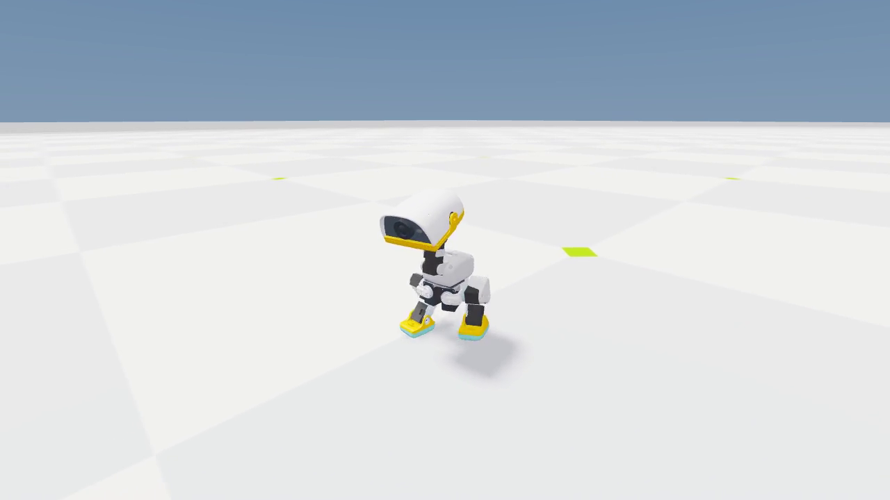
세부 조건·근거: 선택 모델의 실제 Newton 녹화 · checkpoint: model_48200.pt
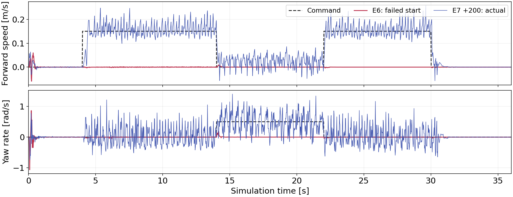
E6 최종모델은고정명령평가를통과해도정지후출발하지않았습니다. E7+200은동일한명령과초기조건에서출발·회전·재출발·정지를추종합니다. 그래프는headless계측이며별도Newton영상도같은정책으로확인했습니다. 세부 조건·근거: 1환경 · seed31415 · 같은36초 명령 · 50Hz 원자료 · 평활화 없음
| 명령 | 최저 생존율 | yaw RMSE | 실제 속도 | 통과 |
|---|---|---|---|---|
| 정지 | 100% | 0.007~0.008 | -0.000~0.000 | 3/3 |
| 전진0.15m/s | 100% | 0.294~0.297 | 0.151~0.153 | 3/3 |
| 회전0.5rad/s | 100% | 0.267~0.274 | 0.497~0.512 | 3/3 |
yaw RMSE 단위rad/s. 정지행의 실제속도는전진속도. 원본startup/reset랜덤화는유지하지만관측잡음/밀기는비활성입니다. 미사용seed27182/16180을포함합니다. 목표한계/hip_yaw포화/직진가동범위/명령80%추종을함께판정합니다. 모든설정기준통과. 실물/험지/장시간외란강인성은미검증. 세부 조건·근거: 각20초 · 31415/27182/16180 · 속도단위: 전진m/s, 회전rad/s
| seed | 1차 / 2차 전진 | 회전 속도 | 이동 기준 충족 | 판정 |
|---|---|---|---|---|
| 31415 | 0.153 / 0.153 | 0.504 | 96.9% | 통과 |
| 27182 | 0.151 / 0.151 | 0.498 | 93.8% | 통과 |
| 16180 | 0.152 / 0.152 | 0.510 | 100.0% | 통과 |
두전진구간중더낮은충족비율을표시. 평균만으로일부정지환경을숨기지않습니다. 선택E7+200에서전진최저환경속도약0.117m/s로완전정지환경은관찰되지않았으며일부환경은명령80%기준0.12에조금미달합니다. 각구간초기2초제외. 정지/회전/생존검사도모두포함합니다. 세부 조건·근거: 각32환경 · 전진m/s, 회전rad/s · 명령80%속도 충족환경≥90% 기준
기본학습성공을가정해험지학습으로넘어가지않습니다. 좌우대칭증강은후속공식PR8883을검토하되고정버전과별도실험으로구분합니다.
| 설계 영역 | 이번 실험에서 얻은 근거 |
|---|---|
| 목표 보상 | 속도 추종 + 자세·접촉 안정성부터 구성 |
| 실행 제한 | 관절 목표 한계는 보상 감점과 별도로 적용 |
| 실패 대응 | 비대칭→대칭 학습 / 회전 오차→오차 감점 |
| 경험·검증 | 출발 실패→전환 경험 / 영상→누락된 평가 발견 |
보상식만으로 모든 실패를 해결하려 하지 않습니다. 정해진 범위를 벗어나는 목표는 실행 경로에서 제한하고, 대칭성은 정책 학습에, 출발 부족은 경험 분포에 반영했습니다. 회전 오차 제곱항은 그다음 출발 문제를 만들거나 드러냈으므로 고정 명령과 전환을 모두 검증합니다. 새 로봇에서는 관절축·한계·모터모델·좌우반전 정의부터 다시 확인해야 합니다. 세부 조건·근거: 가중치를 한 번에 늘리기보다 계측으로 부족한 요소를 구분
| 자료 | 프로젝트 내 위치 |
|---|---|
| 슬라이드 원본 | presentations/microduck-learning/index.html |
| 전체 진행·결정 | docs/reproduction-plan.md |
| 실험 구현·실행 | scripts/gait_recovery.py · train_gait_recovery.py |
| 평가 원자료 | artifacts/gait-diagnosis/ · gait-recovery/ |
| 실험 설정·부모SHA·모델 | experiments/gait-recovery/<실험>/ |
슬라이드갱신: .venv-preview/bin/python scripts/build_learning_slides.py. PDF는렌더스크립트로재생성합니다. 원본학습설정과추가교정설정은섞지않습니다.
| 항목 | 최종 가중치 / 의미 |
|---|---|
| 이동 / 회전 추종 | +4 / +4 · exp(-오차²/σ²), σ=0.15m/s / 0.35rad/s |
| 직립 / 기준자세 | +2 / +1 · 기준자세는정지때만 |
| 몸통각속도 / 각운동량 | -0.05 / -0.02 · 제곱합 |
| 관절한계 / 행동변화 | -1 / -1 · 실제soft-limit초과 / 원시행동차이² |
행동변화감점은큰고정목표를직접억제하지않습니다. 모든항목은제어dt0.02를곱하여합산합니다. 세부 조건·근거: 원본15항목 중8항목 · action-rate는3,000~7,000회에단계강화
| 항목 | 최종 가중치 / 의미 |
|---|---|
| 발공중시간 / 발높이 | +3 / -2 · 0.125~0.3s구간 / 목표높이오차×속도 |
| 스윙최고높이 / 미끄러짐 | -1.12890625 / -0.1 · 착지시높이오차 / 접촉발속도² |
| 자기충돌 | -1 · 발사이접촉 |
| 머리자세 / 지속편향 | +2 / -3 · 목표각추종 / 1초EMA편향 |
스윙높이가중치=-0.25×(0.0425/0.02)^2. 움직임명령일때만활성인발항목을구분합니다. 몸통6개명령에대한별도보상은비활성입니다. 세부 조건·근거: 원본15항목 중7항목 · 발목기준목표높이42.5mm=발바닥20mm+오프셋22.5mm
자료의모든사진·영상은본로컬실행에서확보했습니다. 학습실패를성공사례로바꾸어표현하지않습니다. 세부 조건·근거: NST 기준: 사용자 Obsidian NST design.md + FES v2 수정사항
고정 조건은 목피치/머리피치0.3491rad, yaw/roll0rad. 수동백래시4관절도0에제약. Newton/MJWarp equality constraint의수치오차최대0.005rad를검증. 몸통에대한상대자세고정이며세계좌표고정이아님. 두조건의관측61/76차원및출력14차원유지; 고정조건의4머리출력은물리에적용되지않음. 배우/비평가초기파라미터SHA256동일확인. 개선보상·대칭학습·전환경험을두그룹에같게적용함. 입력 형식 유지를 위해 머리 명령 4개는 0으로 남기되 이를 추종하는 전용 보상은 제거함. 행동 변화, 관절 한계, 목표 초과 등 공통 관절 감점은 유지. 고정 조건의 머리 목표 초과량은 물리 목표에서 제외되므로 0 처리함. 세부 조건·근거: 추가 실험 · 원본 튜토리얼 및 E7 교정과 구분
| 질문 | 비교 지표 |
|---|---|
| 얼마나 빨리 배우나 | 동일 보행 기준 최초 통과까지의 경험 수 |
| 물리 계산은 느려지나 | 수집·최적화 시간 / 초당 상태 전이 수 |
| 얼마나 자주 성공하나 | 미사용 평가 seed의 생존·추종 성공 비율 |
| 안정적으로 학습되나 | 3회 연속 평가 통과 / 여러 학습 seed 반복 |
각500/1500/3000/5000/10000/20000/35000/50000회에서같은누적경험으로비교. 1회경험량1024×24=24576. 1차32환경전진·전환통과시3평가seed의고정명령9조건및전환3조건검증. 기존통과기준유지. 두조건이연속3단계통과하거나최대예산에이르면종료. 단일학습seed의한쌍은탐색결과이며학습수렴성공률의일반적결론이아님. 단계사이는체크포인트복원과환경재시작을두그룹에동일적용. 초기화·평가시간은학습시간과별도. 제어 허용 조건은1718로그후행동값감시중단으로model1700에서재개. 재시도에서유한한목원시출력51.23이중단조건에해당함을확인. wrapper의±3및관절별목표제한을유지하고원시출력50초과는기록·경고로변경. 비유한값과실제적용제한위반은중단함. PPO/보상은변경없음. 곡선의반복수는선택정책의계보이며폐기업데이트와실패도중부분수집은별도(JSON recovery_accounting 참조). 원시출력포화는보행품질문제가능성이있어계속관찰함. 누적학습시간에는실패시도시간을포함하고진단실행시간은제외함. 따라서완전히동일한계산예산의연속학습으로간주하지않음. 다른GPU프로그램의동시실행은시간측정에영향을줄수있어실제소요시간만으로학습효율을단정하지않음. 세부 조건·근거: 현재 학습 seed 한 쌍 · 평가 seed 반복은 학습 seed 반복과 다름
| 측정 항목 | 머리 제어 허용 | 머리 관절 고정 |
|---|---|---|
| 20초 생존율 | 100% | 100% |
| 전진 평균 [m/s] | 0.153 | 0.160 |
| yaw 오차 RMS [rad/s] | 0.300 | 0.318 |
| 몸통 roll 속도 RMS | 0.936 | 0.951 |
| 몸통 pitch 속도 RMS | 0.301 | 0.345 |
즉시고정평가이며추가학습없음. 1평가seed의제한결과이므로일반성공률이나학습난이도로해석하지않음. 몸통각속도단위rad/s. 두조건모두기존집단평균보행검사통과. 생존100%는모든환경의개별추종오차통과를뜻하지않음. 머리의세계좌표움직임은몸통흔들림에도영향받음. 세부 조건·근거: E7+200 동일 가중치 · 32환경 ×20초 · seed31415 · 전진0.15m/s
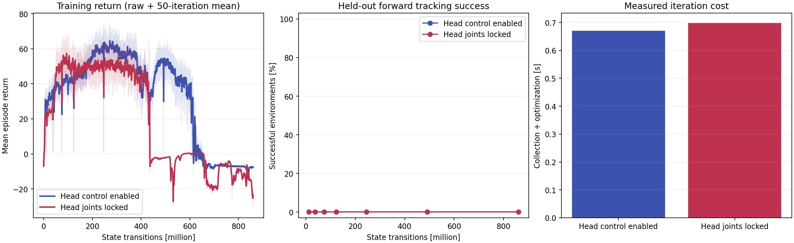
왼쪽은학습평균에피소드보상으로성공률과동일하지않음. 가운데는평가seed31415의32환경에서20초생존, 초기2초제외xyRMSE≤0.15m/s,yawRMSE≤0.35rad/s,전진평균≥명령80%를동시에만족한환경비율. 집단평균보행검사및3seed전체검증과별도지표. 오른쪽은단계별초기5회제외수집+업데이트시간중앙값. 한학습seed의탐색결과이며여러초기가중치에서의수렴확률로해석하지않음. 제어 허용 조건은1718로그후행동값감시중단으로model1700에서재개. 재시도에서유한한목원시출력51.23이중단조건에해당함을확인. wrapper의±3및관절별목표제한을유지하고원시출력50초과는기록·경고로변경. 비유한값과실제적용제한위반은중단함. PPO/보상은변경없음. 곡선의반복수는선택정책의계보이며폐기업데이트와실패도중부분수집은별도(JSON recovery_accounting 참조). 원시출력포화는보행품질문제가능성이있어계속관찰함. 누적학습시간에는실패시도시간을포함하고진단실행시간은제외함. 따라서완전히동일한계산예산의연속학습으로간주하지않음. 다른GPU프로그램의동시실행은시간측정에영향을줄수있어실제소요시간만으로학습효율을단정하지않음. 세부 조건·근거: 동일 누적 경험까지 표시 · 진한 선은50회 이동평균 · 조건별 초기5회/단계 제외 시간
| 조건 | 누적 반복 | 학습 분 | 생존율 | 전체 기준 |
|---|---|---|---|---|
| 머리 제어 허용 | 35,000 | 391.8 | 0.0% | 미달 |
| 머리 관절 고정 | 35,000 | 398.3 | 0.0% | 미달 |
현재까지두조건모두완료한마지막단계만표시. 학습분은환경수집·PPO업데이트를포함한학습루프실측누적이며초기화/평가시간제외. 초기커널컴파일은첫루프시간에포함될수있음. 생존율은전진평가32환경의전체20초생존. 전체기준은전진·전환사전검사후3seed고정명령/전환검증통과여부. 최대예산까지미달하면성공으로바꾸지않음. 상세: artifacts/head-lock/comparison-status.json. 제어 허용 조건은1718로그후행동값감시중단으로model1700에서재개. 재시도에서유한한목원시출력51.23이중단조건에해당함을확인. wrapper의±3및관절별목표제한을유지하고원시출력50초과는기록·경고로변경. 비유한값과실제적용제한위반은중단함. PPO/보상은변경없음. 곡선의반복수는선택정책의계보이며폐기업데이트와실패도중부분수집은별도(JSON recovery_accounting 참조). 원시출력포화는보행품질문제가능성이있어계속관찰함. 누적학습시간에는실패시도시간을포함하고진단실행시간은제외함. 따라서완전히동일한계산예산의연속학습으로간주하지않음. 다른GPU프로그램의동시실행은시간측정에영향을줄수있어실제소요시간만으로학습효율을단정하지않음. 세부 조건·근거: 누적 경험 860,160,000개/조건 · 학습 seed42 · 상태 paused
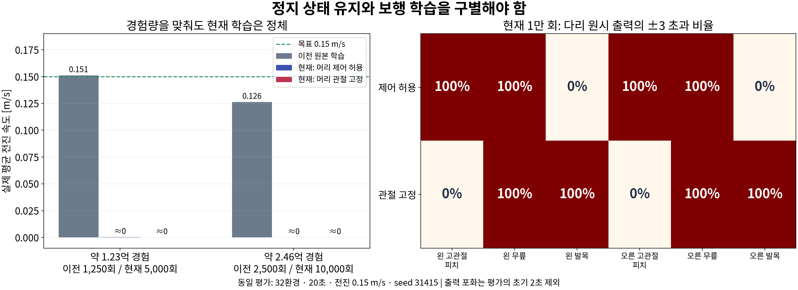
이전4096환경의1250/2500체크포인트를현재1024환경5000/10000회와비교. 원본라벨은0부터시작하여경험차이0.1%미만. seed31415,32환경,20초,전진0.15m/s의동일평가. 평균전진속도원본0.151/0.126m/s,현재두조건거의0. 원본도yawRMSE약0.39로0.35기준및목표한계기준미달이므로완성보행을뜻하지않음. 단일평가seed,학습설정·초기가중치차이가있는역사적비교. 출력포화비율은초기2초제외. 원자료/추가조건: artifacts/head-lock/progress-review/comparison.json. 총보상은항목차이때문에직접비교하지않음.
큰원시출력경고허용은실행중단검사의보완일뿐정체해결이아님. action_rate는wrapper clip후ActionManager.action차이이며target_overflow도clip후계산. 원시출력-10/-100/-1000이모두-3으로같아지는구간에서는추가감점이없지만Gaussian entropy는원시분산을장려할수있음. 이메커니즘은확인된코드와일치하나원인별기여도는미검증. 현재action_rate가중치-1 도달은7000×1024×24경험,원본은7000×4096×24경험. 새학습은임의초기화이며기존E7은45000회보행모델의미세조정. 머리고정의미사용4출력이entropy/직전행동/행동변화감점에남는점도분리검토. 물리목표제한을유지한출력/탐색일관성대조→커리큘럼및추가감점분리→제어허용기준군보행확인→동일설정머리고정비교순서를권장. 상세: docs/head-lock-comparison.md.
선택 모델: E7+200, model_48200.pt. 원본 e7-200.mp4의 6~13초 전진 구간을 원래 속도(50fps)로 재생함. 1280×720 원본에서 x=384, y=240, 512×288 영역을 잘라 1280×720으로 확대함. 로봇 동작·형태 변경 없음. 0.15m/s 전진 명령, seed 31415, 단일 환경의 실제 Newton 시뮬레이션 녹화. 반복 재생의 연결 지점은 편집 구간 경계임. 검증 범위는 평지 play 조건이며, 자세한 정량 결과와 정지·회전 전환 검증은 앞 장 참조. HTML에서 마지막 장으로 이동하면 자동 재생; 영상 클릭으로 일시 정지/재생. PDF는 대표 프레임으로 대체함.